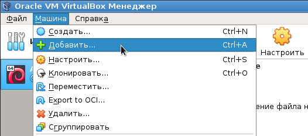

Иногда стоит задача: нужно на основе образа одной виртуальной машины сделать несколько дополнительных образов виртуальных машин. Проблема в том, что если просто скопировать файлы одной виртуальной машины в другую директорию, и попробовать добавить виртуалку из этой новой директории:

... то получится следующая ошибка:
Trying to open a VM config ... which has the same UUID as an existing virtual machine.
Как ее обойти? Есть один неоднозначный, но работающий метод. Для его использования потребуется консоль и консольная программа VBoxManage, которая устанавливается вместе с VirtualBox.
Идея в том, чтобы заменить UUID виртуальной машины и UUID образа диска виртуальной машины на новые уникальные UUID.
Вначале надо дважды дать команду:
VBoxManage internalcommands sethduuid файл.vdi
Эта команда при каждом запуске прописывает новый UUID в файл формата *.vdi. Первый запуск делается для того, чтобы просто получить в консоль новый случайный UUID. Да, он пропишет в *.vdi-файл новый UUID, но этот UUID будет заменен при втором запуске команды. Таким образом в консоли будет видно два UUID. Первый - это просто уникальный UUID, второй - это новый UUID, прописанный в *.vdi-файле.
Примечание: в операционной системе Linux вместо двух запусков VBoxManage можно обойтись одним. Чтобы получить в консоли первый уникальный UUID, можно воспользоваться следующей командой (в новых ядрах Linux механизм генерации UUID через спецфайл присутствует по-умолчанию):
cat /proc/sys/kernel/random/uuid
Далее нужно открыть файл *.vbox, найти там строку:
<Machine uuid="{84786b5b-1abd-48e1-be7d-9ff50195dfca}" ...
И заменить UUID на первый UUID, полученный в консоли.
Затем надо найти следующие строки:
<HardDisk uuid="{5915f240-a13a-4f7d-a05f-bc3239eb140b}" ...
...
<Image uuid="{5915f240-a13a-4f7d-a05f-bc3239eb140b}"/>
И заменить в них UUID на второй UUID, полученный в консоли. Тег Image может встречаться несколько раз в *.vbox-файле. Заменять нужно только для Image, относящегося к жесткому диску. Если встечаются Image, относящиеся к CD-ROM, их заменять не нужно.
Итого, после всех вышеуказанных действий можно будет добавлять образ виртуальной машины в GUI VirtualBox, ошибка больше не будет появляться.